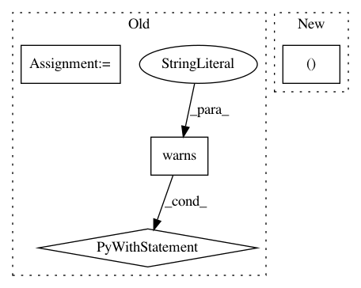

4a52511469992d2abe0686bc6d1588f7469cbb3f,mne/decoding/tests/test_receptive_field.py,,test_inverse_coef,#,492
Before Change
n_feats, n_targets, n_samples = 5, 60, 50
X, y = make_data(n_feats, n_targets, n_samples, tmin, tmax)
for estimator in (0., Ridge(alpha=0.)):
rf = ReceptiveField(tmin, tmax, 1., estimator=estimator, patterns=True)
with pytest.warns((RuntimeWarning, UserWarning),
match="[Singular|scipy.linalg.solve]"):
rf.fit(y, X)
run_tests_if_main()
After Change
n_delays = int((tmax - tmin) + 1)
// Check coefficient dims, for all estimator types
X, y = _make_data(n_feats, n_targets, n_samples, tmin, tmax)
tdr = TimeDelayingRidge(tmin, tmax, 1., 0.1, "laplacian")
for estimator in (0., 0.01, Ridge(alpha=0.), tdr):
rf = ReceptiveField(tmin, tmax, 1., estimator=estimator,
In pattern: SUPERPATTERN
Frequency: 3
Non-data size: 4
Instances
Project Name: mne-tools/mne-python
Commit Name: 4a52511469992d2abe0686bc6d1588f7469cbb3f
Time: 2019-05-08
Author: larson.eric.d@gmail.com
File Name: mne/decoding/tests/test_receptive_field.py
Class Name:
Method Name: test_inverse_coef
Project Name: pytorch/ignite
Commit Name: 7753eabc5af8bed2cca4713805613adfbc460a8e
Time: 2021-02-21
Author: francois.cokelaer@gmail.com
File Name: tests/ignite/metrics/test_precision.py
Class Name:
Method Name: _test_distrib_integration_multilabel
Project Name: pytorch/ignite
Commit Name: 7753eabc5af8bed2cca4713805613adfbc460a8e
Time: 2021-02-21
Author: francois.cokelaer@gmail.com
File Name: tests/ignite/metrics/test_recall.py
Class Name:
Method Name: _test_distrib_integration_multilabel